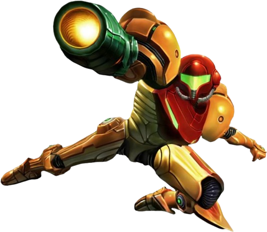
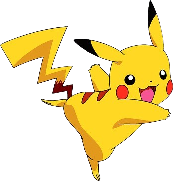
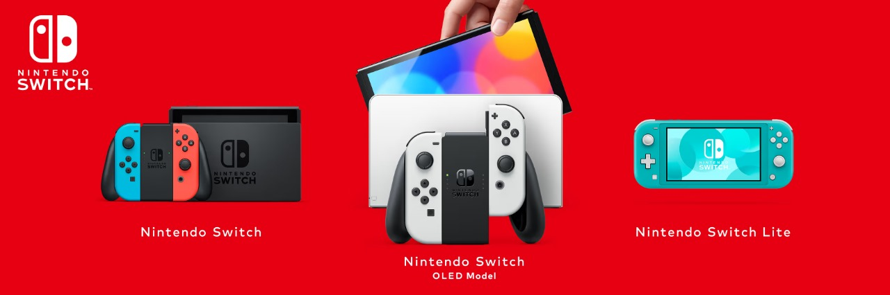
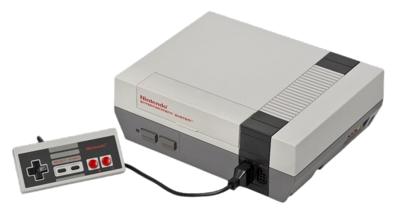
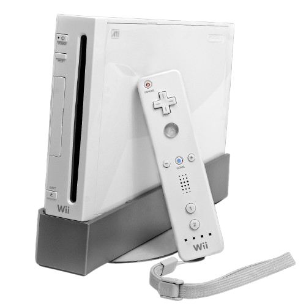

NINTENDO
1. Nintendo es una empresa japonesa de videojuegos y entretenimiento, reconocida mundialmente por crear algunas de las franquicias más icónicas en la historia de los videojuegos, como Super Mario, The Legend of Zelda, Pokémon, Metroid y Donkey Kong.

2. Nintendo fue fundada el 23 de septiembre de 1889 en Kioto, Japón, por Fusajiro Yamauchi. En sus inicios, la empresa se dedicaba a fabricar cartas Hanafuda, un juego de cartas tradicional japonés.
 
Durante casi un siglo, Nintendo experimentó con diferentes negocios, como:
• Taxis
• Juguetes
• Hoteles del amor
• Arroz instantáneo
Ninguno de estos negocios tuvo éxito, por lo que en los años 70 decidieron entrar al mundo de los videojuegos.
CONSOLAS
Nintendo inició en la industria de los videojuegos en 1983 con la Famicom en Japón, conocida internacionalmente como la Nintendo Entertainment System (NES), revolucionando el mercado con franquicias icónicas como Super Mario Bros. y The Legend of Zelda.
Luego, en 1990, lanzó la Super Nintendo (SNES), consolidando su éxito con gráficos mejorados y títulos legendarios; en 1996, la Nintendo 64 introdujo los gráficos en 3D y un innovador control con joystick analógico; en 2001, la GameCube apostó por discos ópticos, aunque quedó opacada por la competencia.
 en 2006, la Wii cambió el juego con su control por movimiento, alcanzando un éxito masivo; en 2012, la Wii U intentó innovar con una pantalla táctil en su control, pero tuvo ventas limitadas; finalmente, en 2017, Nintendo revolucionó nuevamente el mercado con la Switch, una consola híbrida que combinó el juego portátil y de sobremesa, consolidando su legado en la industria.
